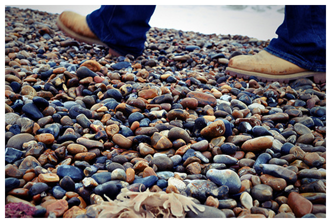
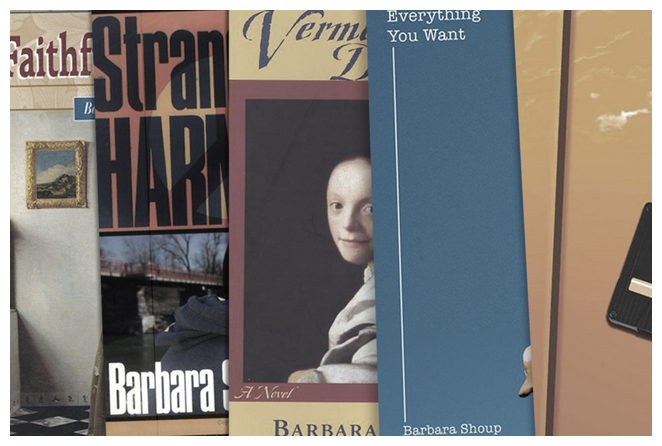

ABOUT BARBARA
Barbara Shoup is the author seven novels, as well as numerous works of short fiction, poetry and essays. She has received considerable local and national recognition for her work, with two of her young adult novels being selected as American Library Association Best Books for Young Adults. Barbara is the winner of the 2012 Eugene and Marilyn Glick Regional Indiana Author Award... Read more
AN AMERICAN TUNE
Barbara's newest novel An American Tune tells the story of Jane, a young girl forced into hiding after becoming involved in a deadly bombing, and Nora, the woman she became, a wife and mother living a quiet life in northern Michigan. An achingly poignant account of a family crushed under the weight of suppressed truths, An American Tune illuminates the irrevocability of our choices and how those choices come to compose the tune of our lives...Read more
BOOKS
Barbara Shoup's novels include Night Watch, Wish You Were Here, Stranded in Harmony, Faithful Women, Vermeer’s Daughter, Everything You Want, and An American Tune. Her short fiction, poetry, essays, and interviews have appeared in numerous small magazines, as well as in The Writer and The New York Times Travel Section... Read more about Barbara's novels or read her essays.
© Barbara Shoup 2012